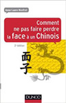

What do “saving face” and “losing face” mean in China? What are its deep implications in communicating with the Chinese socially and professionally?
This concise and practical guide provides an in-depth understanding of the cultural importance of "face" in China.
It relates the most frequent misunderstandings between Westerners and the Chinese. It is not simply a “do or don’t” guide, nor a scientific paper on the concept of face. This book is full of real life anecdotes and cultural faux-pas shared by both the Chinese and Westerners (Europeans and Americans) collected and analyzed over several years of interviews and research.
| Contents | |
|
|
The advice given is straightforward and easy to apply in daily life and in business. At the end of every chapter, the reader can find a quiz to help summarize the most important points.
Why write a book about “face” in China?
When I was in China, I realized that communication difficulties between the Chinese and Westerners mostly came from “face” related misunderstandings. Although everyone working or living in China knows “face” is omnipresent in every social interaction, this concept is often misinterpreted or misunderstood. So I decided to fill the gap to help people in China who are confronted with face issues on a daily basis.
| Also available in French! |